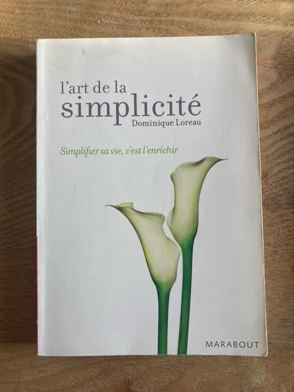
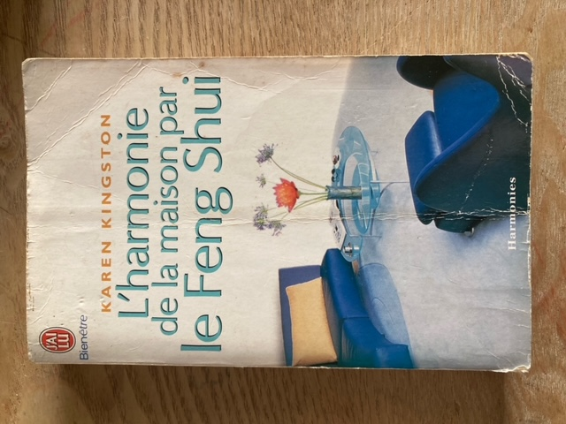
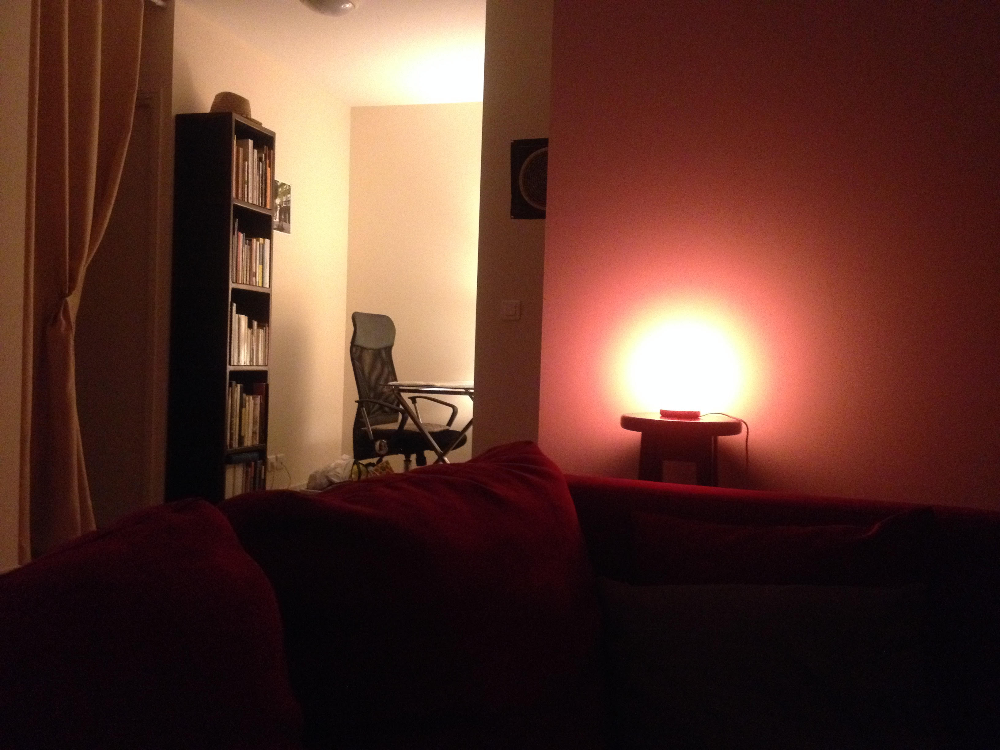

Le Feng Shui : une richesse ancestrale
Comme tout art métaphysique, le Feng Shui peut s’expliquer par 1000 mots, mais rien n’en vaudra l’expérience.
La naissance d’une science
Issu des arts millénaires taoïstes chinois, le Feng Shui traditionnel est aujourd’hui considéré comme une véritable science. En effet, cette science est le fruit de vastes études et analyses sérieuses de terrains et de peuples, qui ont été menées par les maîtres taoïstes chinois d’il y a près de 5000 ans.

Ces études ont donné naissance à des théories et des formules, parfois complexes, qui mettent en relation la place de l’Homme dans son environnement, entre le Ciel et la Terre, entre la Montagne et l’Eau, en y associant également le paramètre du Temps.
Ainsi, les fondements des différents systèmes du Feng Shui traditionnel sont basés sur l’observation de l’influence de l’environnement sur les différents peuples à cette époque, à savoir sur l’essor ou le déclin potentiel de ces mêmes peuples, en fonction des conditions dans lesquelles ils vivaient et donc de leurs relations avec l’Espace et le Temps (climat, saisons, géographie ..).
Le Souffle du Dragon

De la Montagne, s’écoule le souffle du Dragon, également appelé souffle cosmique, ou encore souffle vital : c’est le fameux Qi (Chi). Le Qi traverse, relie et anime toute chose sur Terre. C’est le fluide vital qui anime tout être vivant, de sa naissance jusqu’à sa mort. C’est l’Energie qui monte au Printemps et redescend à l’Automne. C’est celle qui sommeille en Hiver, et qui brûle en Été, à son apogée, par le Feu du plein soleil. C’est aussi l’Energie qui donne force et densité au Minéral, son aplomb et son expansion au Végétal, ses courbes et sa fluidité à l’Océan.
La manifestation de l’Univers
A l’origine du Cosmos, nous étions 1. Pour se manifester, l’Univers, le Grand Tout, s’est divisé en 2, puis 3, puis en 10 000 êtres . Le Yin et le Yang, représenté par le symbole du Tai Ji, montre que rien n’existe dans l’existence sans son contraire, sans son opposé. Le chaud et le froid, le grand et le petit, le lourd et le léger, l’Amour et la peur.

Tout, absolument tout dans l’univers est en dualité. Et, à la maturité de chaque chose, germe la graine de l’opposé. Tout est cycle de transformation. Tout est cycle permanent de mort et de renaissance. Dans les philosophies bouddhiste et hindouiste, le but de l’existence est de revenir à la grande conscience, à l’Unité.
Pour définir l’univers, les taoïstes ont finalement mis au point le système de transformation de la matière, par le système des 5 mouvements, ou des 5 éléments (Eau, Bois, Feu, Terre, Métal) qui interagissent entre eux en permanence par 3 cycles différents et complémentaires (cycle de production, cycle de destruction, cycle de contrôle).
Applications modernes

C’est grâce à ces différents outils, le Yin et le Yang, les 5 éléments, les formules du paysages (espace extérieur - San He), des 8 palais (espace intérieur - Ba Zhai) et des étoiles volantes (temps - Xuan Kong Fei Xing) que la circulation, la canalisation ou la neutralisation du Qi, en fonction de s’il est favorable (Sheng Qi) ou défavorable (Sha Qi) aux habitants d’un lieu de vie, est travaillée.
A sa naissance, chaque être vivant reçoit comme un flash énergétique, qui lui attribue comme un code, une identité cosmique (le Ming Gua). C’est en combinant ce code avec les différentes formules et systèmes de Feng Shui traditionnel que l’on va pouvoir analyser et définir si les énergies en présence d’un lieu sont favorables ou défavorables aux habitants.
Alors le praticien Feng Shui pourra recommander et conseiller des aménagements et des changements spécifiques au bureau et à la maison, afin d’optimiser les 4 grands différents aspects de la Vie : Amour & Relations, Santé & Aide céleste, Vitalité & Prospérité, Sérénité & Paix intérieure.
Ethique du praticien
La mission d’un praticien en Feng Shui traditionnel : tout mettre en œuvre, de façon honnête et éthique, suite à la demande claire et respectueuse de son client, pour épanouir ses potentiels de vie & optimiser sa destinée.
Nos Offres
Premier contact avec le Feng Shui

FORFAIT DÉCOUVERTE
« Ma 1ère VISITE FENG SHUI »
Un 1er regard, bienveillant et avisé, sur votre intérieur et surtout sur le Qi qui y circule. Harmonie des formes, des couleurs et des matières, équilibre du Yin et du Yang, aspect énergétique, je vous donnerai mon avis et quelques conseils clés pour optimiser votre lieu de vie. Cette étape introductive au Feng Shui est la porte d’entrée vers une analyse plus poussée.
Prévoyez 1 à 2 h de consultation. Tarif : 70€

FORFAIT FENG SHUI
« JE FAIS LE TRI DANS MA VIE »
Parce que l’on a souvent du mal à se lancer seul dans le grand rangement de sa vie, j’ai concocté ce forfait pour vous ! En prenant l’espace et le temps d’une journée complète à vos côtés, on va agir ensemble et concrètement pour trier, vider, nettoyer, désencombrer, purifier et ordonner votre espace de vie. C’est la transition clé pour la remise en circulation du Qi et une étude traditionnelle Feng Shui plus approfondie.
Forfait 1 journée : 180€ - 2 journées : 330€ - 3 journées : 480€
Analyse Feng Shui approfondie

ANALYSE FENG SHUI
« MON MONDE INTERIEUR »
Analyse Feng Shui complète de votre intérieur, selon les formules traditionnelles chinoises, BA ZHAI (8 palais) et XUAN KONG FEI XING (étoiles volantes), ainsi que l’étude des formes et mon regard énergétique (encombrement, pureté, harmonie). Conseils et remèdes en agencement et aménagement. 8€/m2.
Base 1 habitant pour un appartement ou maison de plain pied. Autre configuration à tarifier sur devis.
Plan précis à l’échelle à fournir ou à prévoir en supplément.

ANALYSE FENG SHUI
« TOTAL BIEN-ETRE »
Analyse Feng Shui complète de votre intérieur, selon les formules traditionnelles chinoises, BA ZHAI (8 palais) et XUAN KONG FEI XING (étoiles volantes), ainsi que l’étude des formes et mon regard énergétique (encombrement, pureté, harmonie) + analyse BA ZHAI et SAN HE de base (Ming Tang, Animaux Célestes, Ba Zhai extérieur) de vos extérieurs. Conseils et remèdes en agencement et aménagement intérieur, orientation de la porte d’entrée, placements extérieurs. 12€/m2.
Base 2 habitants pour une maison de plain pied. Autre configuration à tarifier sur devis.
Plan précis à l’échelle à fournir ou à prévoir en supplément.
Analyse Feng Shui spécifique
FORFAIT FENG SHUI
« HARMONIE DU COUPLE »
Offrez à votre couple et à votre vie amoureuse une analyse feng shui complète et valable à vie ! Ce forfait inclue l’étude de votre intérieur selon les formules traditionnelles du système BA ZHAI (8 palais) et du système XUAN KONG FEI XING (étoiles volantes), pour 2 personnes, dans la limite d’un espace de 80 m2.
Plan précis à l’échelle à fournir ou à prévoir en supplément. Tarif : 480€

FORFAIT FENG SHUI
« MA CUISINE & MOI »
Saviez-vous qu’en feng shui traditionnel la place de votre cuisine, l’orientation de sa porte d’entrée ainsi que celle de votre cuisinière et de votre four est primordiale ? Grâce à cette prestation, ne focalisez que sur une pièce de votre habitat, pour neutraliser le mauvais Qi et activer le bon !
Base forfait pour 1 habitant pour un appartement ou une maison de plain pied, pour un espace de 80 m2.
Plan précis à l’échelle à fournir ou à prévoir en supplément. Tarif : 390€
Qui je suis

Depuis plus de vingt ans, je consacre ma vie et mon attention au bien-être, à l’énergie et à l’harmonie, que ce soit pour moi-même, pour les autres ou pour l’espace qui nous entoure.
Attirée par les pratiques de développement du corps et de l’esprit, mon parcours est marqué par une recherche continue d'équilibre, reposant sur trois piliers: le bien-être intérieur, le travail sur l'énergie ou "Qi" en japonais, et l’harmonisation de l’habitat.
Le bien-être intérieur par le Yoga
C’est en 2003 à Grenoble que j’ai débuté dans le hatha yoga, un moment vécu comme une véritable renaissance, et qui marqua le point de départ de mon exploration énergétique et spirituelle ! La pratique des postures en pleine conscience et de la méditation m’a ouvert les portes du bien-être et de la joie intérieure.
Ayant eu la chance de pratiquer dans plusieurs pays et de tester plusieurs styles, c’est à l’Ashram international de hatha yoga Sivananda que j’ai finalement suivi la formation de professeurs (TTC), en 2016. Grâce à mes 20 ans de pratique et à cette formation, j’ai développé une connaissance solide des techniques pour équilibrer mon corps & mon esprit, et pour l’enseigner à mon entourage.
L'harmonie de l'habitat grâce au Feng Shui
Ma rencontre avec le feng Shui et l’harmonisation de l’habitat eu lieu plus tard, en 2007. Ce sont notamment ces 2 ouvrages qui m’ont fait basculée dans l’univers passionnant du feng Shui et de l’harmonisation de l’espace.


En quête permanente d’harmonie, en recherche perpétuelle d’équilibre, le Feng Shui me suit partout. Grâce à mes expériences de vie dans différents pays, notamment en Asie où j’ai eu la chance de voyager, j’ai pu observé comment les populations organisaient leur habitat et comment ils soignaient leur intérieur.

Progressivement, mon besoin d’approfondir le sujet m’a menée au feng Shui traditionnel. En 2019, j’ai rencontré l’institut de feng Shui suisse, auprès duquel j’ai suivi une première formation, puis j’ai décidé en 2020 de me former à la source, à la prestigieuse Yap Cheng Hai Academy.
J’ai atteint un niveau intermédiaire en 2021, ce qui me permet d’accompagner des particuliers dans leur harmonisation avec leur lieu de vie, selon les principes millénaires du Feng Shui. Cette approche complète ma vision du bien-être qui englobe non seulement la personne, mais aussi son environnement.
Le travail de l'énergie avec l’Aïkido
En parallèle, c’est en 2009 à Nouméa que j’ai rencontré l’Aïkido. L’aïkido est un art martial pacifiste, sans compétition, qui signifie « Voie de l’Harmonie ». Encore, je suis tombée en amour avec la pratique. Alliant discipline, non-violence et recherche de l’harmonie avec son partenaire, l’aïkido permet de développer progressivement le contrôle de notre énergie, de nos émotions, et de notre mental. Après 15 ans de pratique, j’ai eu l’honneur de sanctionner mon parcours d’Aïkidoka par l’obtention du Shodan (1er Dan) en juin 2024. À travers l’aïkido, j’apprends à canaliser le Qi, ce qui est en lien direct avec mes autres pratiques énergétiques.
Ainsi, à travers mon parcours, que je souhaite riche et élargi pour servir au mieux mon prochain, je propose une approche complète du bien-être, de la santé mentale et de l’équilibre, unissant les dimensions corporelle, énergétique et spatiale.